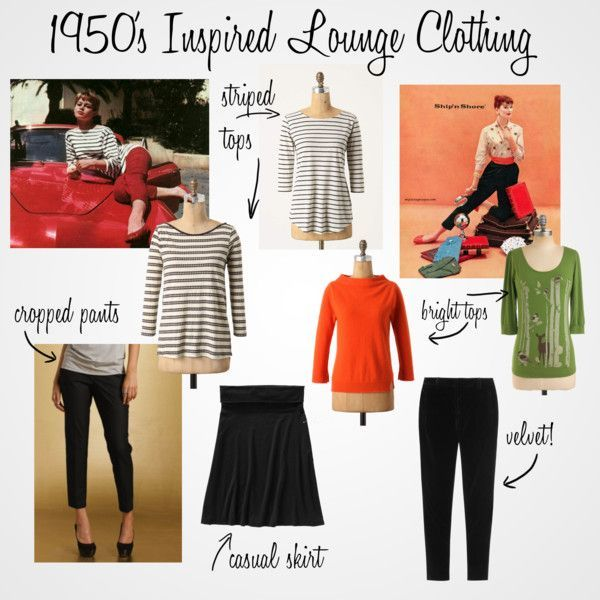

Sumergirse en el mundo de la ropa vintage y de segunda mano es como abrir una cápsula del tiempo ⏳✨ llena de historias, estilo y encanto único. Cada prenda tiene alma 💖, y encontrarla es parte de la magia. Para que esta experiencia sea tan especial como auténtica, lo primero es mirar con ojos curiosos 👀 y atentos: observa los detalles, siente las texturas 🧵, revisa costuras, botones y cierres, porque ahí se esconde la calidad que ha sobrevivido al paso del tiempo.
Olvídate de las tallas tradicionales 🧺, porque la moda de antes no hablaba el mismo lenguaje que la actual; lo mejor es guiarte por tus medidas 📏 y, si puedes, ¡probarte todo lo que te encante! Investiga un poco sobre décadas, estilos y marcas 📚: eso te ayudará a reconocer verdaderas joyas vintage 💎 y te convertirá en un buscador o buscadora de tesoros con estilo.
¿Un tip extra? 💡 Atrévete a probar algo que normalmente no usarías 🎨: muchas veces, esas piezas inesperadas son las que más elevan tu look. Y por supuesto, elige lugares con alma—tiendas locales 🛍️, ferias de moda circular o plataformas online con curaduría ética y estética 🌿💻.

Comprar vintage no es solo una elección de moda 👗, es una declaración de amor al planeta 🌎, a la historia 📜 y a tu propio estilo único ✨💫.